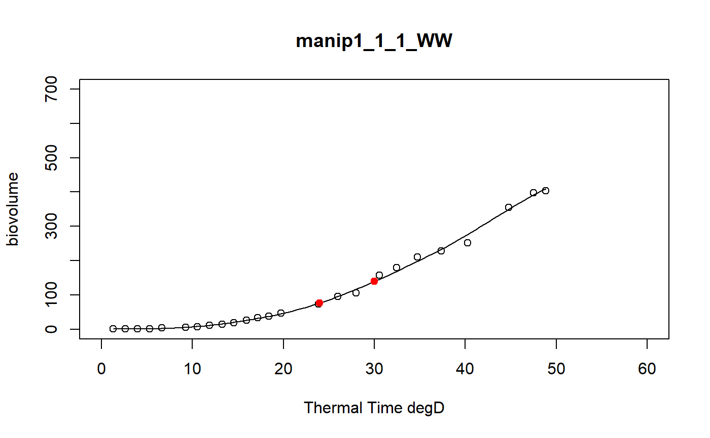

a function to model curve of a dataset using a local regression
fitLocfit.Rdthis function models each curve of a dataset using a local regression on biovolume, plant height or leaf area trait and extracts predictions at specific thermal times
fitLocfit(datain, trait, xtime, myylim, tt, reference, myxlab)
Arguments
| datain | input dataframe |
|---|---|
| trait | character, trait of interest to model (example biovolume, PH ...) |
| xtime | character, name of the thermal time column in the input dataset (example thermaltime) |
| myylim | numeric, max value of y-axis , varies according to trait |
| tt | numeric vector of thermal times at which predictions are recovered |
| reference | character, a column name indicating an unique identifiant of plant in the input dataset (example: Ref == concatenation of experimentAlias-Line-Position-scenario) |
| myxlab | character, a x label for the output graphics |
Value
a dataframe of the predictions at tt thermal times for each plant of the input data set and the graphics of the smoothing curves
Details
the input dataset must contain a thermalTime column (numeric data) and a Ref column (unique id)
Examples
# \donttest{ # Take a while... myThermalTimes<-c(24,30) selec<-c("manip1_1_1_WW","manip1_1_2_WW","manip1_1_3_WW", "manip1_1_4_WW","manip1_1_5_WW") mydata<-plant1[plant1[,"Ref"] %in% selec,] resu<-fitLocfit(datain=mydata,trait="biovolume",xtime="thermalTime", myylim=700,tt=myThermalTimes,reference="Ref", myxlab="Thermal Time degD")str(resu)#> 'data.frame': 10 obs. of 3 variables: #> $ Ref : chr "manip1_1_1_WW" "manip1_1_1_WW" "manip1_1_2_WW" "manip1_1_2_WW" ... #> $ xpred: num 24 30 24 30 24 30 24 30 24 30 #> $ ypred: num 76.5 139.2 68.2 105.9 61.3 ...# }